SeqPlotR attaches legend metadata to the elements that draw the data.
A LegendKey describes one glyph-plus-label row and a
SeqLegendSpec (from seq_legend()) says where
to lay rows out. For continuous scales,
seq_gradient_legend() produces a color bar. Legends are
also generated automatically when map() binds
color, fill or shape to a column.
Three positions are supported:
| Position | Where it renders |
|---|---|
"inside" |
Overlaid on the data panel. |
"track_margin" |
In the canvas margin beside one track. |
"canvas_margin" |
Aggregated from all tracks into one margin band. |
Data
library(SeqPlotR)
#>
#> Attaching package: 'SeqPlotR'
#> The following object is masked from 'package:base':
#>
#> %||%
library(GenomicRanges)
#> Loading required package: stats4
#> Loading required package: BiocGenerics
#> Loading required package: generics
#>
#> Attaching package: 'generics'
#> The following objects are masked from 'package:base':
#>
#> as.difftime, as.factor, as.ordered, intersect, is.element, setdiff,
#> setequal, union
#>
#> Attaching package: 'BiocGenerics'
#> The following objects are masked from 'package:stats':
#>
#> IQR, mad, sd, var, xtabs
#> The following objects are masked from 'package:base':
#>
#> anyDuplicated, aperm, append, as.data.frame, basename, cbind,
#> colnames, dirname, do.call, duplicated, eval, evalq, Filter, Find,
#> get, grep, grepl, is.unsorted, lapply, Map, mapply, match, mget,
#> order, paste, pmax, pmax.int, pmin, pmin.int, Position, rank,
#> rbind, Reduce, rownames, sapply, saveRDS, table, tapply, unique,
#> unsplit, which.max, which.min
#> Loading required package: S4Vectors
#>
#> Attaching package: 'S4Vectors'
#> The following object is masked from 'package:utils':
#>
#> findMatches
#> The following objects are masked from 'package:base':
#>
#> expand.grid, I, unname
#> Loading required package: IRanges
#> Loading required package: Seqinfo
win <- GRanges("chr1", IRanges(1, 1e6))
# sparse ChIP-like signal with sharp peaks
make_chip <- function(n = 200, n_peaks = 8, seed = 1) {
set.seed(seed)
starts <- sort(sample(1:999000, n))
scores <- runif(n, 0, 0.15)
for (pk in sort(sample(seq_len(n), n_peaks))) {
w <- max(1, pk - 3):min(n, pk + 3)
scores[w] <- scores[w] + runif(length(w), 0.4, 0.85)
}
GRanges("chr1", IRanges(starts, width = 1), score = pmin(scores, 1))
}
gr_a <- make_chip(seed = 1)
gr_b <- make_chip(seed = 2)
# continuous scores for gradient examples
set.seed(42)
gr_cnt <- GRanges("chr1", IRanges(sort(sample(1:999000, 120)), width = 1),
score = round(runif(120, 0, 100), 1))
# contact-map-like tiles
n_bins <- 60
starts_hic <- seq(1, 1e6, length.out = n_bins + 1)[-(n_bins + 1)]
pairs <- expand.grid(i = seq_len(n_bins), j = seq_len(n_bins))
pairs <- pairs[pairs$j >= pairs$i, ]
gr_tiles <- GRanges("chr1", IRanges(starts_hic[pairs$i], width = 1e6 / n_bins),
y = pairs$j,
fill = pmax(0, pmin(1, round(exp(-(pairs$j - pairs$i) * 0.08) +
rnorm(nrow(pairs), 0, 0.05), 3))))
# simulated chromothripsis on chr3: somatic SNVs and copy-number segments
sim <- function(f) utils::read.delim(system.file("extdata", "sim", "ct", f, package = "SeqPlotR"))
snv <- sim("snvs.tsv")
snv <- GRanges(snv$chrom, IRanges(snv$pos, width = 1), vaf = snv$vaf, depth = snv$depth,
sbs6 = snv$sbs6, clonality = ifelse(snv$clonal, "clonal", "subclonal"))
seg <- sim("segments.tsv")
seg <- GRanges(seg$chrom, IRanges(seg$start, seg$end), cn = seg$cn,
state = ifelse(seg$cn > 2, "gain", ifelse(seg$cn < 2, "loss", "neutral")))
win_ct <- GRanges("chr3", IRanges(9.5e7, 1.95e8))
# right margin wide enough for auto-generated legends
right_margin <- aes(margins = list(top = 0, right = 0.25, bottom = 0, left = 0))Manual legends
Inside
A bare LegendKey passed to legend is
auto-placed at the panel centre.
p1 <- seq_plot() %+%
seq_track(data = gr_a, mapping = map(x = start, y = score),
windows = win) %+%
seq_area(
aesthetics = aes(fill = "#D08080", alpha = 0.8),
legend = LegendKey(label = "H3K27ac",
color = "#A02020", fill = "#D08080", shape = "-")
)
p1$plot()A bare LegendKey is auto-placed at the panel centre.
seq_legend() pins the legend to a corner. x
and y are fractions of the panel; hjust = 1
right-aligns the block and orientation = "horizontal" puts
the keys in one row.
k1 <- LegendKey(label = "H3K27ac", color = "#A02020", fill = "#D08080", shape = "-")
k2 <- LegendKey(label = "H3K4me3", color = "#205080", fill = "#8090C0", shape = "-")
spec_inside <- seq_legend(
list(k1, k2),
title = "ChIP marks",
position = "inside",
x = 0.02, # 2% from the left edge
y = 0.95, # 95% of the way up the panel
orientation = "vertical"
)
p2 <- seq_plot() %+%
seq_track(data = gr_a, mapping = map(x = start, y = score),
windows = win) %+%
seq_area(
aesthetics = aes(fill = "#D08080", alpha = 0.8),
legend = spec_inside
)
p2$plot()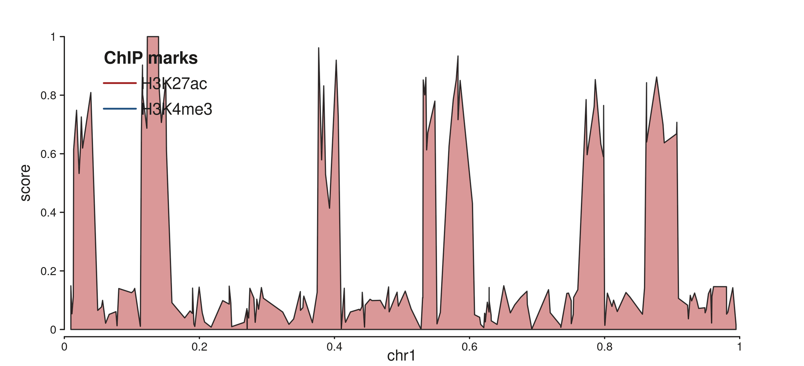
seq_legend() anchors the legend to the top-left corner with a title.
spec_h <- seq_legend(
list(k1, k2),
title = "ChIP marks",
position = "inside",
x = 0.98, hjust = 1, # right-align
y = 0.95,
orientation = "horizontal"
)
p3 <- seq_plot() %+%
seq_track(data = gr_a, mapping = map(x = start, y = score),
windows = win) %+%
seq_area(
aesthetics = aes(fill = "#D08080", alpha = 0.8),
legend = spec_h
)
p3$plot()Two keys in a horizontal row, right-aligned at the top.
Track margin
"track_margin" draws the legend in the margin beside one
track. Set side and enlarge the matching plot margin to
make room.
spec_tm <- seq_legend(
list(k1, k2),
title = "ChIP marks",
position = "track_margin",
side = "left",
orientation = "vertical",
x = 0.1, # fraction of margin width
y = 0.8 # fraction of margin height (0 = bottom, 1 = top)
)
p_tm <- seq_plot(
aesthetics = aes(margins = list(top = 0.03, bottom = 0.03,
left = 0.18, right = 0.03))
) %+%
seq_track(data = gr_a, mapping = map(x = start, y = score),
windows = win) %+%
seq_area(
aesthetics = aes(fill = "#D08080", alpha = 0.8),
legend = spec_tm
)
p_tm$plot()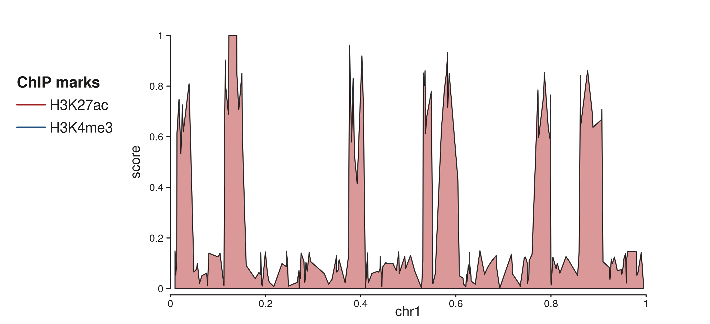
Two-key vertical legend in the 18% left canvas margin beside the track.
orientation defaults to "vertical" for left
and right sides and "horizontal" for top and bottom:
seq_legend(k1, position = "track_margin", side = "left")$orientation
#> [1] "vertical"
seq_legend(k1, position = "track_margin", side = "top")$orientation
#> [1] "horizontal"Canvas margin
"canvas_margin" collects entries from all tracks and
renders them once across the chosen margin. Specs sharing a
title merge under one heading; differing titles are
separated into groups. Use %__% to stack the tracks.
# Each spec carries the key for one track.
# The first spec's x / hjust controls alignment of the aggregated block.
spec_ca <- seq_legend(k1, title = "ChIP marks", position = "canvas_margin",
side = "top", x = 0.5, hjust = 0.5)
spec_cb <- seq_legend(k2, title = "ChIP marks", position = "canvas_margin",
side = "top")
p_cm <- seq_plot(
aesthetics = aes(margins = list(top = 0.12, bottom = 0.04,
left = 0.04, right = 0.04))
) %+%
seq_track(data = gr_a, mapping = map(x = start, y = score),
windows = win) %+%
seq_area(aesthetics = aes(fill = "#D08080", alpha = 0.8), legend = spec_ca) %__%
seq_track(data = gr_b, mapping = map(x = start, y = score),
windows = win) %+%
seq_area(aesthetics = aes(fill = "#8090C0", alpha = 0.8), legend = spec_cb)
p_cm$plot()Two stacked tracks sharing a single canvas-margin legend at the top.
spec_ca2 <- seq_legend(k1, title = "Active enhancers",
position = "canvas_margin", side = "top",
x = 0.5, hjust = 0.5)
spec_cb2 <- seq_legend(k2, title = "Promoters",
position = "canvas_margin", side = "top")
p_cm2 <- seq_plot(
aesthetics = aes(margins = list(top = 0.14, bottom = 0.04,
left = 0.04, right = 0.04))
) %+%
seq_track(data = gr_a, mapping = map(x = start, y = score),
windows = win) %+%
seq_area(aesthetics = aes(fill = "#D08080", alpha = 0.8), legend = spec_ca2) %__%
seq_track(data = gr_b, mapping = map(x = start, y = score),
windows = win) %+%
seq_area(aesthetics = aes(fill = "#8090C0", alpha = 0.8), legend = spec_cb2)
p_cm2$plot()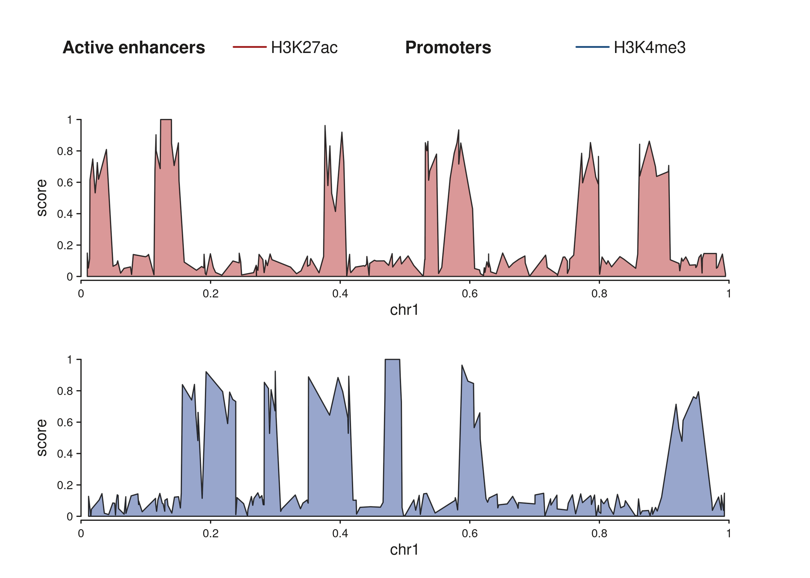
Two title groups separated in the canvas margin.
Gradient color bars
seq_gradient_legend() renders a filled bar graded from
the palette’s low to high colour with a tick axis. Placement arguments
(position, x, y,
hjust, orientation, side) work as
in seq_legend().
Manual placement
grad_inside <- seq_gradient_legend(
palette = "viridis",
limits = c(0, 100),
title = "Score",
position = "inside",
x = 0.97, # near the right edge
y = 0.5, # vertically centred
hjust = 1,
orientation = "vertical"
)
p_gi <- seq_plot() %+%
seq_track(data = gr_cnt, mapping = map(x = start, y = score),
windows = win) %+%
seq_point(
aesthetics = aes(color = "#2166AC", size = 1.2),
legend = grad_inside
)
p_gi$plot()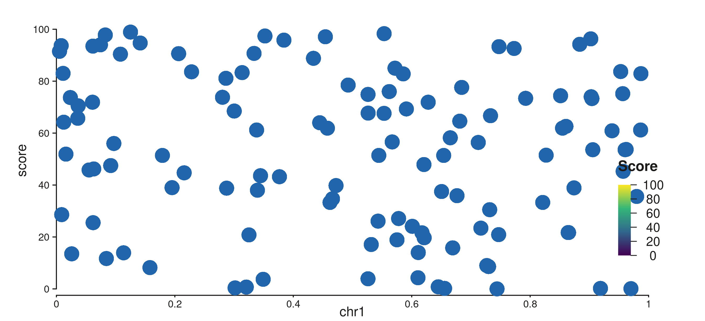
Vertical viridis color bar pinned to the right side of the panel.
Place the bar in the track margin for a clean separation from the data:
grad_tm <- seq_gradient_legend(
palette = "plasma",
limits = c(0, 100),
title = "Score",
position = "track_margin",
side = "right",
orientation = "vertical",
x = 0.5,
y = 0.5
)
p_gtm <- seq_plot(
aesthetics = aes(margins = list(top = 0.03, bottom = 0.03,
left = 0.03, right = 0.20))
) %+%
seq_track(data = gr_cnt, mapping = map(x = start, y = score),
windows = win) %+%
seq_point(
aesthetics = aes(color = "#2166AC", size = 1.2),
legend = grad_tm
)
p_gtm$plot()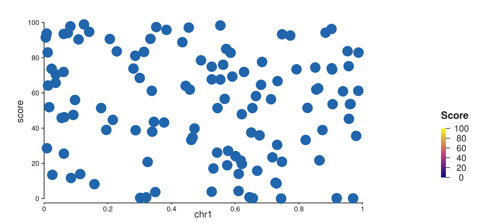
Horizontal plasma color bar in the right track margin.
Tick breaks
breaks is NULL (default
pretty() ticks), a single integer (pretty()
targeting that many ticks), or a numeric vector of exact values.
grad_breaks <- seq_gradient_legend(
palette = "magma",
limits = c(0, 100),
breaks = c(0, 25, 50, 75, 100),
title = "Score",
position = "inside",
x = 0.97,
y = 0.5,
hjust = 1,
orientation = "vertical"
)
p_brk <- seq_plot() %+%
seq_track(data = gr_cnt, mapping = map(x = start, y = score),
windows = win) %+%
seq_point(
aesthetics = aes(color = "#8B3A8B", size = 1.2),
legend = grad_breaks
)
p_brk$plot()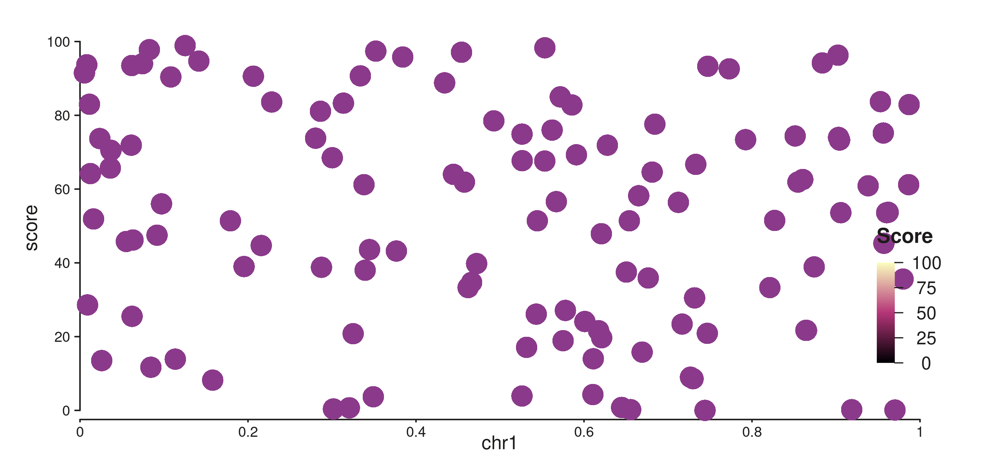
Color bar with explicit breaks at 0, 25, 50, 75, 100.
A gradient legend attached to a seq_tile heatmap:
hleg <- seq_gradient_legend(
palette = "reds",
limits = c(0, 1),
title = "Contact\nfrequency",
breaks = 4,
x = 0.72, y = 0.95,
orientation = "vertical",
position = "inside"
)
p11 <- seq_plot(
aesthetics = aes(margins = list(top = 0.04, bottom = 0.04,
left = 0.04, right = 0.04))
) %+%
seq_track(windows = win) %+%
seq_tile(
data = gr_tiles,
mapping = map(x = start, y = y, fill = fill),
legend = hleg
)
p11$plot()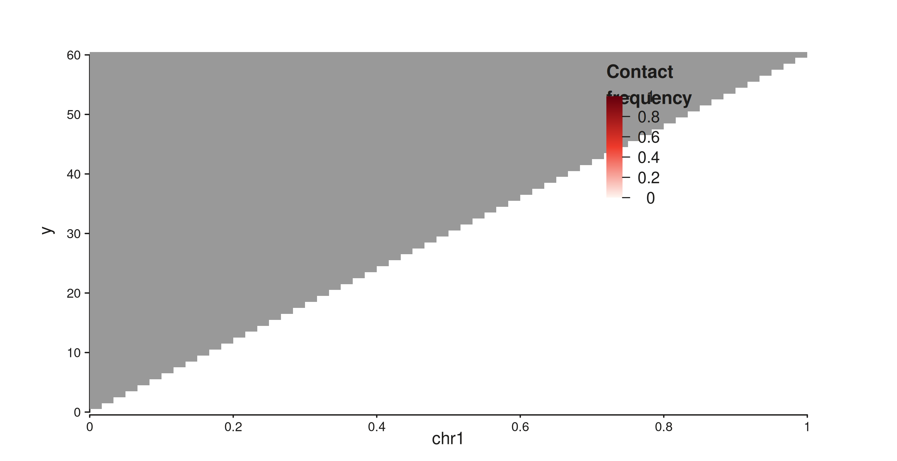
Contact-map heatmap with a four-tick gradient legend placed inside.
Automatic legends
Mapping a column to color, fill or
shape generates a legend with no seq_legend()
call. Discrete columns give a keyed legend (flexoki palette; shapes
cycle circle, square, triangle, diamond) and numeric columns give a
viridis color bar. Auto-legends go in the right track margin, so reserve
space with the plot-level margins aesthetic. An explicit
legend always overrides auto-generation.
The examples below use a simulated chromothripsis sample.
snv holds its somatic SNVs on chr3 (variant allele
fraction, read depth, the six-class mutation type sbs6, and
whether the SNV is clonal), and seg holds its copy-number
segments, where the shattered region between 100 and 190 Mb oscillates
between copy number 3 and 1.
Mapping color to the mutation type gives a six-level
discrete legend:
p1 <- seq_plot(aesthetics = right_margin) %+%
seq_track(data = snv, mapping = map(x = start, y = vaf), windows = win_ct) %+%
seq_point(
aesthetics = aes(size = 0.6, alpha = 0.7),
mapping = map(color = sbs6)
)
p1$plot()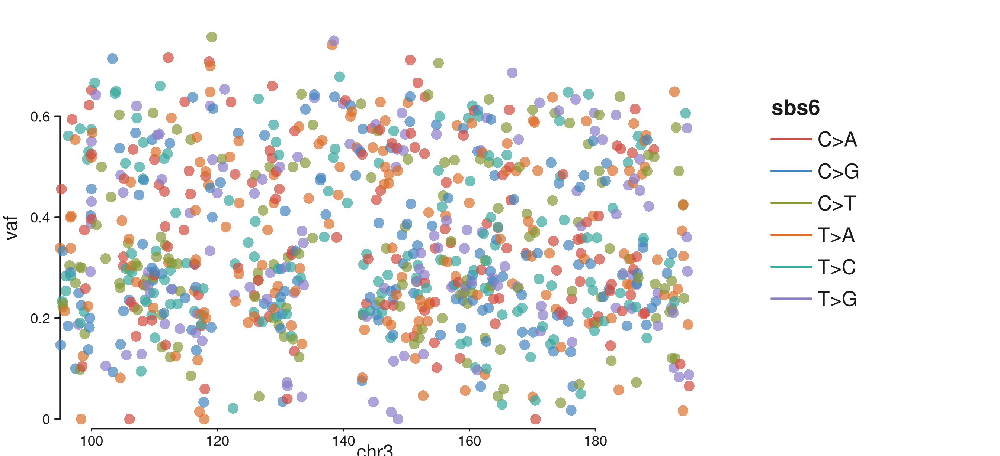
Six-level discrete color legend for SNV mutation type in the right track margin.
Mapping shape to clonality marks clonal and subclonal
SNVs with different glyphs:
p2 <- seq_plot(aesthetics = right_margin) %+%
seq_track(data = snv, mapping = map(x = start, y = vaf), windows = win_ct) %+%
seq_point(
aesthetics = aes(size = 0.8, alpha = 0.7),
mapping = map(shape = clonality)
)
p2$plot()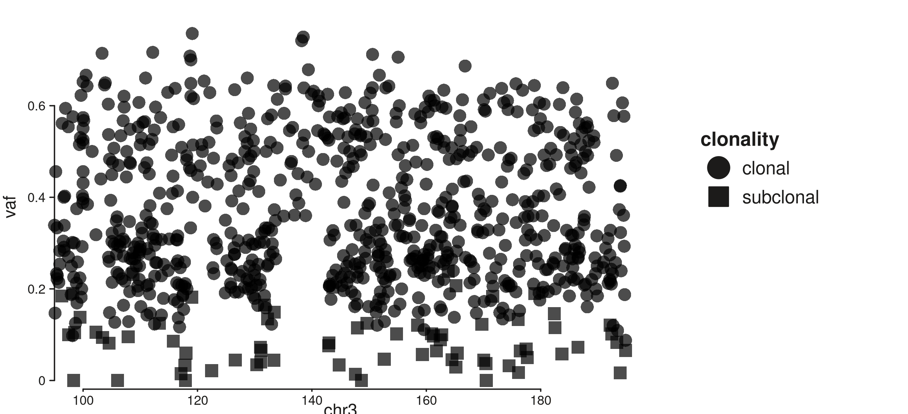
Shape legend auto-generated from map(shape = clonality) in the right track margin.
A numeric column gives a color bar. Here read depth is on the y axis, which drops where the copy number falls to 1, and the color shows the variant allele fraction:
p3 <- seq_plot(aesthetics = right_margin) %+%
seq_track(data = snv, mapping = map(x = start, y = depth), windows = win_ct) %+%
seq_point(
aesthetics = aes(size = 0.7, alpha = 0.8),
mapping = map(color = vaf)
)
p3$plot()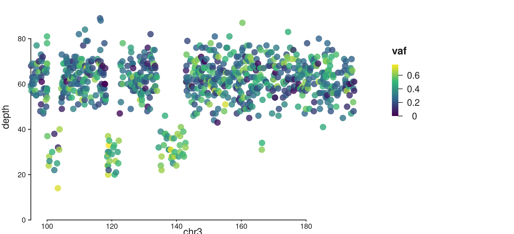
Viridis color bar with auto tick axis for SNV variant allele fraction.
The same applies to other elements, including seq_bar,
seq_segment and seq_tile heatmaps. Copy-number
segments drawn as bars take their fill from the gain, loss or neutral
state:
p4 <- seq_plot(aesthetics = right_margin) %+%
seq_track(data = seg, mapping = map(x = start, y = cn), windows = win_ct,
scale_y = seq_scale_continuous(limits = c(0, 3.2))) %+%
seq_bar(
aesthetics = aes(alpha = 0.85),
mapping = map(x = start, y = cn, fill = state)
)
p4$plot()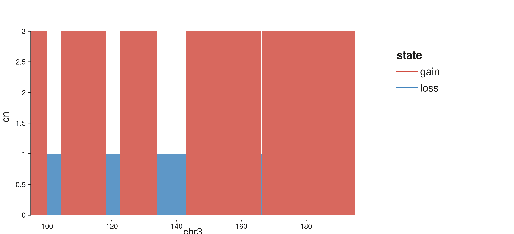
Copy-number segment bars with a discrete fill legend from map(fill = state).
seq_segment draws one horizontal line per copy-number
segment, colored by state:
p5 <- seq_plot(aesthetics = right_margin) %+%
seq_track(data = seg, mapping = map(x = start, y = cn), windows = win_ct,
scale_y = seq_scale_continuous(limits = c(0, 3.5))) %+%
seq_segment(
aesthetics = aes(linewidth = 3),
mapping = map(x = start, x_end = end, y = cn, y_end = cn, color = state)
)
p5$plot()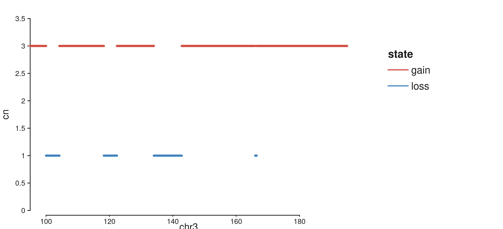
seq_segment with a discrete color legend from map(color = state).
A numeric fill gives a gradient. Here the bar fill follows the integer copy number:
p6 <- seq_plot(aesthetics = right_margin) %+%
seq_track(data = seg, mapping = map(x = start, y = cn), windows = win_ct,
scale_y = seq_scale_continuous(limits = c(0, 3.2))) %+%
seq_bar(
mapping = map(x = start, y = cn, fill = cn)
)
p6$plot()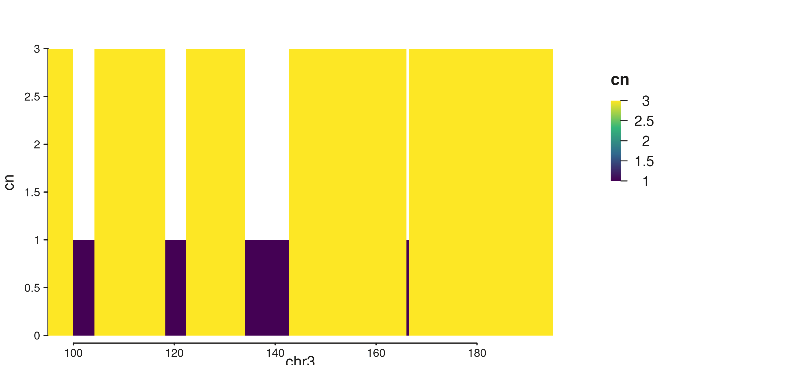
Copy-number segment bars with a continuous fill gradient from map(fill = cn).
The tile heatmap keeps the contact-map tiles, since the simulated data has no contact matrix:
p7 <- seq_plot(
aesthetics = aes(margins = list(top = 0.04, bottom = 0.04,
left = 0.04, right = 0.25))
) %+%
seq_track(windows = win) %+%
seq_tile(
data = gr_tiles,
mapping = map(x = start, y = y, fill = fill)
)
p7$plot()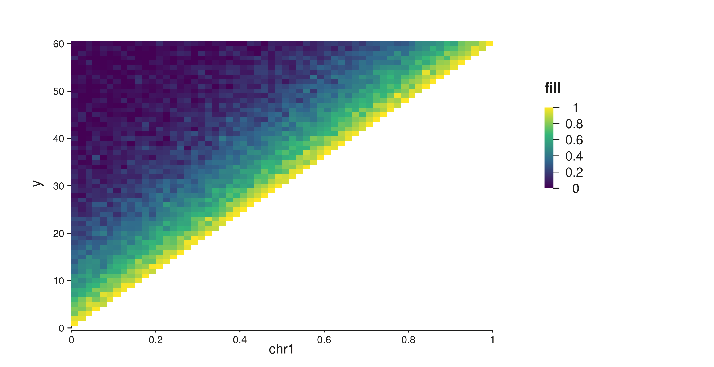
Contact-map tiles with auto gradient legend.
Suppression
Each level overrides the finer levels below it.
show_legend = FALSE on an element silences only that
element, including its auto-generated bar or legend:
el_shown <- seq_area(legend = LegendKey(label = "Foreground"))
el_hidden <- seq_area(legend = LegendKey(label = "Background"),
show_legend = FALSE)
is.null(el_shown$collect_legend_keys()) # FALSE — contributes
#> [1] FALSE
is.null(el_hidden$collect_legend_keys()) # TRUE — suppressed
#> [1] TRUE
el_no_bar <- seq_bar(mapping = map(fill = score), show_legend = FALSE)
is.null(el_no_bar$auto_legend) # TRUE — no bar generated
#> [1] TRUEOn a track it silences every element in that track:
trk <- seq_track(windows = win,
elements = list(el_shown, el_hidden),
show_legend = FALSE)
is.null(trk$collect_legend_keys()) # TRUE — whole track suppressed
#> [1] TRUElegend = FALSE (or show_legend = FALSE) on
seq_plot() removes all legend output, auto-generated
included:
p_no_legend <- seq_plot(legend = FALSE) %+%
seq_track(data = gr_a, mapping = map(x = start, y = score),
windows = win) %+%
seq_area(
aesthetics = aes(fill = "#D08080", alpha = 0.8),
legend = spec_inside # spec defined earlier — ignored here
)
p_no_legend$plot()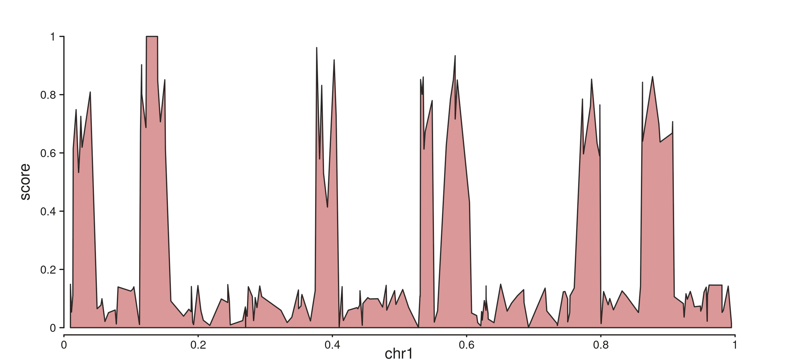
legend = FALSE on seq_plot() removes all legend output.
Inspecting legend metadata
collect_legend_keys() aggregates entries from an
element, a track, or all tracks in a plot. It returns NULL
when nothing contributes, otherwise a list with title,
key and element_class.
k <- LegendKey(label = "ChIP signal", title = "Tracks", color = "darkgreen")
el <- seq_area(legend = k)
str(el$collect_legend_keys()[[1]])
#> List of 3
#> $ title : chr "Tracks"
#> $ key :List of 9
#> ..$ label: chr "ChIP signal"
#> ..$ title: chr "Tracks"
#> ..$ color: chr "darkgreen"
#> ..$ shape: chr "-"
#> ..$ size : num 1
#> ..$ alpha: num 1
#> ..$ fill : NULL
#> ..$ lty : num 1
#> ..$ extra: list()
#> ..- attr(*, "class")= chr "LegendKey"
#> $ element_class: chr "SeqArea"
el1 <- seq_area(legend = LegendKey(label = "H3K27ac", color = "#A02020"))
el2 <- seq_area(legend = LegendKey(label = "H3K4me3", color = "#205080"))
trk <- seq_track(windows = win, elements = list(el1, el2))
keys <- trk$collect_legend_keys()
cat(length(keys), "keys from track:\n")
#> 2 keys from track:
for (entry in keys)
cat(" ", entry$key$label, "—", entry$element_class, "\n")
#> H3K27ac — SeqArea
#> H3K4me3 — SeqAreaSummary
| Task | How |
|---|---|
| Attach a legend, auto-placed at panel centre | seq_area(legend = LegendKey(...)) |
| Anchor to a corner | seq_legend(keys, position = "inside", x =, y =) |
| Beside one track |
seq_legend(keys, position = "track_margin", side =)
plus a wider margin |
| One band for all tracks | seq_legend(keys, position = "canvas_margin", side =) |
| Continuous color bar | seq_gradient_legend(palette =, limits =, breaks =) |
| Automatic legend |
map(color = col), map(fill = col) or
map(shape = col)
|
| Suppress |
show_legend = FALSE on an element or track;
legend = FALSE on the plot |
| Palette | Colors |
|---|---|
"viridis" |
purple, teal, yellow (default) |
"plasma" |
dark blue, magenta, yellow |
"magma" |
black, red, cream |
"blues" |
white to navy |
"reds" |
white to dark red |